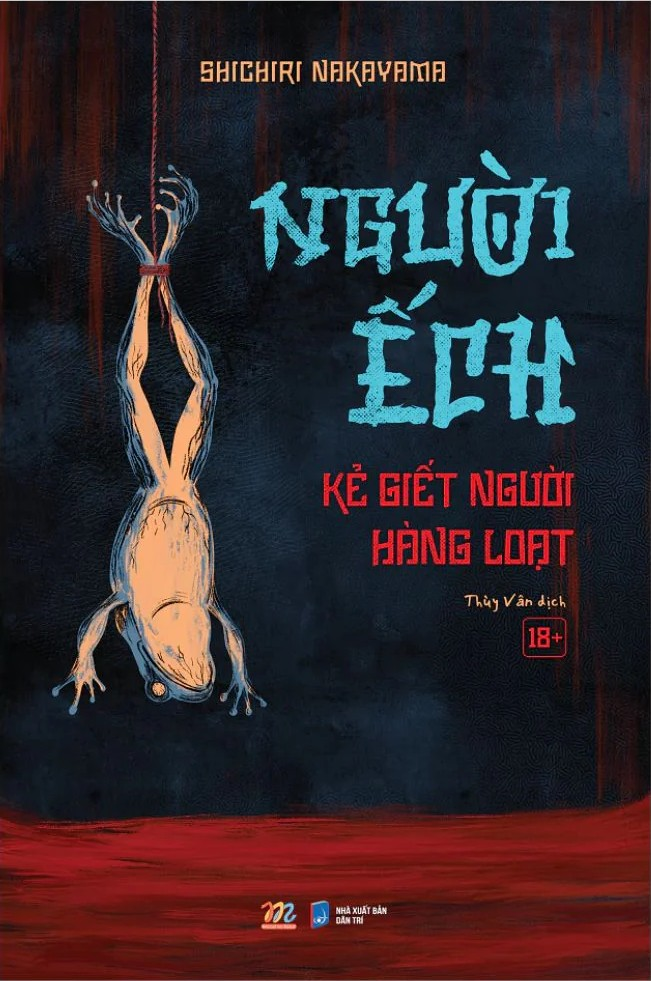

REVIEW SÁCH
Người ếch
Nhận xét của mình
Nghe tên sách là có thể thoang thoáng biết được là nội dung của nó rất ghê, và đúng như thế, hung thủ ra tay rất tàn độc trên xác của các nạn nhân (tàn độc thế nào thì mời bạn đọc nha). Mở đầu câu chuyện là sự xuất hiện của một người giao báo, vô tình phát hiện một cái xác khoả thân của một cô gái bị treo từ tầng trên, bằng cách móc cái móc câu lớn vào miệng nạn nhân. Khi phát hiện xác nạn nhân thì cái xác cũng đang trong quá trình phân huỷ và giòi bọ đã lúc nhúc trong miệng và hốc mắt. Hung thủ sau khi làm nạn chết bằng việc tác động mạnh, sau đó làm ra trò biến thái này để rồi mọi người gọi hắn là "người ếch". Mình thấy cuốn này hay, nhưng có lẽ là nó cũng chỉ ở mức hay thôi. Và nó mang hơi hướng đánh nhau, cũng không hẳn là đánh nhau, về cuối thì có những phân đoạn combat bằng nắm đấm và cả dao nữa, và tác giả mô tả những cơn đau rất ghê nha. Nhưng cái mà mình siêu ấn tượng về nó chắc là plot twist của cuốn này. Mình là người hay đọc plot twist nên mình hay dự đoán trước một điều gì đó, nó đã đúng nhưng nó có hẳn 3 cái plot twist, chính xác là twist chồng twist. Và cuốn này cũng khắc hoạ về căn bệnh tâm lý và bệnh nhân tâm thần, đặc biệt là phần con ở trong con người.
🛍️ Tìm mua cuốn sách
Bạn có thể tham khảo giá tại các nhà sách online: